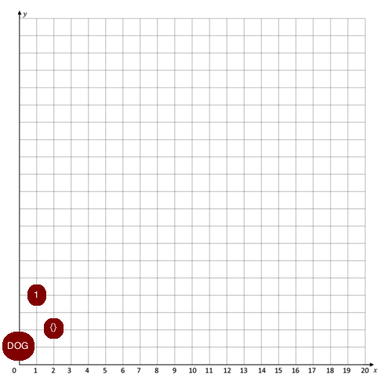
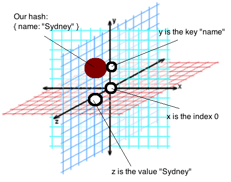

Dev Bootcamp Phase 0
Week 4
December 22, 2015
Arrays and hashes, hashes and arrays --- the two concepts in ruby are important, yet (at least for me) could be confusing. Both arrays and hashes are:
- collections of data
- useful for storing and then retrieving data
- have many built-in features in ruby that make them easily manipulated
- have index numbers designating item location in the array or hash beginning with 0 and increasing by one for each item in the collection
- and have similar syntax ...
There is a lot of existing information on the interwebs that describes at length the differences between arrays and hashes. Here are some resources I found useful:
- Ruby Array documentation
- Ruby Hash documentation
- A great easy-to-follow article on the topic from Robert Quails
- Slide presentation on the topic from Niranjan Sarade
But for my post, I wanted to do something a little different. You see, for some time now, I've used a mental trick for thinking through arrays and hashes that I have yet to see used elsewhere. NOTE: I was *almost* a math major at university and so this approach is a little math-y.
I think of Arrays as plots on 2D graphs and Hashes as plosts on 3D graphs. Yesh -- I know this isn't perfect since in mathematical graphing, points on the various axis are quantified, while both arrays and hashes can contain all sorts of objects (not exclusive to numbers). BUT, for whatever reason, thinking of arrays and hashes this way helped the two concepts click for me.
FOR ARRAYS imagine a 2D x-y graph (we'll stick with quadrant I). The x-axis, notoriously marking the variable that is INDEPENDENT of the variables on the y-axis, represents the index. The index number (0, 1, 2, etc.) doesn't care what value or item it is attached to (0 doesn't care if array[0] is "dog" or 1 or {} or whatever). The index is independent of the value (just like x is independent of y). Visually now!
Note: the location of the item along the y-axis is irrelevant (I know of no y-axis that contains "dog", 1, and empty hash lol --- again this is not a perfect analogy)
FOR HASHES imagine a 3D graph. Still .... our x-axis is the independent variable and will always be numbers 0 through whatever (counting the items in the hash), BUT at each x marker (or index) there are a pair of values that exist. These pairs are keys and values. I think of the hieararchy of indices, keys, and values in a hash as going from most independent to least (in that order: indices, keys, values). Again, indices don't care at all what is ascribed to them --- they denote position and no key or value can change that. BUT keys are also independent of values. Usually keys even describe a value.
For example, you might make an address hash with keys name, street, city, state, and zip. Those keys are independent of the values you put inside them. In fact they should describe the values! Said another way, no matter what I put as the value for name ( e.g., { "name" => "balooga whale sandwich virtual reality monkey" }) it will still be described as a "name" whether it actually is one or not --- hence the key is independent. But what the value is (or what we understand it to be) will be impacted by the key we give it.
Again ... this is how I visually think of hashes (x-axis = index, y-axis = key, z-axis = value):
Okay --- I know this has the potential to confuse which is not my intention! But I know it helped me a lot to think of arrays and hashes in this graphical manner. Before I choose which to use in my code (array or hash), I always think to myself: now which graph would I put this information on? Because again, as the functionality and uses of both are so similar (but not exactly the same), it can be a huge disaster for your code if you realize deep down the rabbit hole that you should have used the other type of our array / hash pair.
This is simply my trick for safely diving into that rabbit hole --- everyone's will be different --- at the very least I hope my crazy imperfect analogy opened up for you a world where you feel empowered to come up with your own tricks!
Happy Hashing and Merry Arrays! ;)